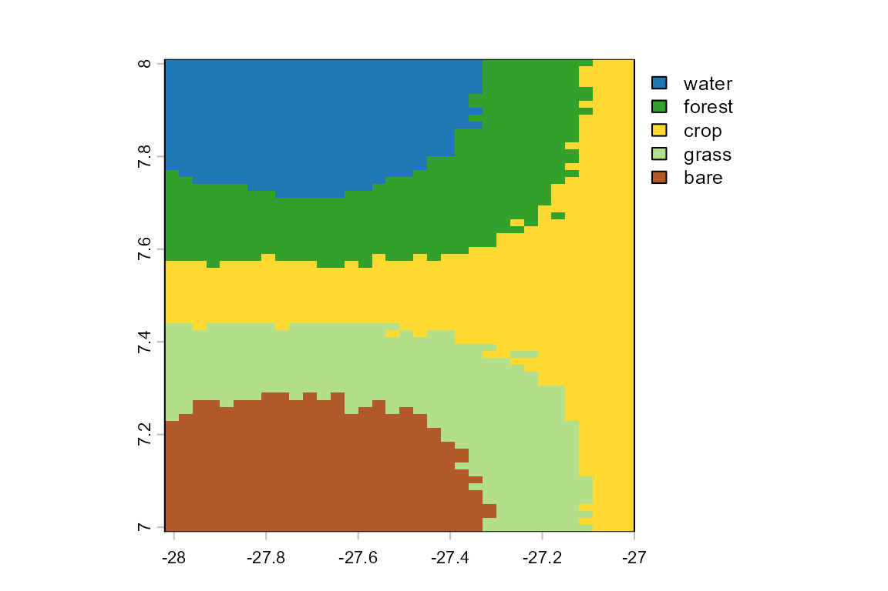

rcs stores sf objects and terra rasters
next to tables, in the same store and with the same functions. This
vignette shows what the package adds to geospatial data when it writes
them, and how to read only the rows that intersect an area. It assumes
you have read vignette("rcs").
Geocoding needs the package h3o, and rasters need terra. Both are suggested, not required; the code below that uses them runs only when they are installed.
Write an sf object
rcs_sim_polygons() returns simulated polygons in a box
of open ocean, between longitudes −30 and −24 and latitudes 6 and 9:
small squares and hexagons, a few large and long thin shapes,
multipolygons and one empty geometry. rcs_sim_points() and
rcs_sim_lines() give points and lines in the same box.
polys <- rcs_sim_polygons(500, seed = 1)
polys
#> Simple feature collection with 500 features and 3 fields (with 1 geometry empty)
#> Geometry type: GEOMETRY
#> Dimension: XY
#> Bounding box: xmin: -29.94218 ymin: 6.050584 xmax: -24.07019 ymax: 8.952676
#> Geodetic CRS: WGS 84
#> # A tibble: 500 × 4
#> id area cat geometry
#> <int> <dbl> <chr> <GEOMETRY [°]>
#> 1 1 46041. d POLYGON ((-29.8 6.1, -27.3 6.1, -27.3 7.6, -29.8 7.6,…
#> 2 2 4487. a POLYGON ((-25.18752 8.2, -25.21461 8.36477, -25.31917…
#> 3 3 6755. d POLYGON ((-26.6 6.2, -25.8 6.2, -25.8 7, -26.6 7, -26…
#> 4 4 30.1 e POLYGON ((-29 8.5, -26.27514 8.5, -26.27514 8.500904,…
#> 5 5 0.392 e MULTIPOLYGON (((-26.75391 7.293398, -26.74991 7.29339…
#> 6 6 0.392 e MULTIPOLYGON (((-27.96559 7.733237, -27.96159 7.73323…
#> 7 7 0.391 b MULTIPOLYGON (((-26.42263 8.281812, -26.41863 8.28181…
#> 8 8 4.90 b POLYGON ((-27.59022 7.49, -27.57022 7.49, -27.57022 7…
#> 9 9 NA a POLYGON EMPTY
#> 10 10 0.0779 d POLYGON ((-27.62909 6.399786, -27.62657 6.399786, -27…
#> # ℹ 490 more rowsAn sf object is written like a table. The dataset’s kind
becomes geospatial, and its coordinate reference system
(CRS) is kept in the catalog. Any CRS can be used. The data are stored
in their own CRS; only the H3 cells are computed on a copy in EPSG:4326
(see “Geocoding engines” below).
store_write(st, polys, "shapes/polygons",
title = "Polygons",
description = "Simulated polygons in open ocean.",
key = "id"
)
#> ℹ Writing "shapes/polygons": 500 rows in 1 file, and its index table in 1 file.
#> ✔ primary <tempdir>/geo-store 2/2 files sent 72.8 kB 0.2s
#> ✔ MD5 identical for 2 files in 1 location. Catalogs updated.Two files were written: the data, and an index table, explained below.
What the package adds, and why
A spatial filter on a large dataset should not read every geometry.
To let the Parquet reader skip rows without looking at geometries, the
package adds three columns when it writes an sf object:
-
h3: an H3 cell. H3 divides the globe into hexagonal cells at 16 resolutions; at resolution 5, the default, a cell covers about 250 km².h3is the cell that holds the largest part of the geometry, stored as a 64-bit integer and read back as an H3 cell vector (classrcs_h3, see below). -
bbox: the bounding box of the geometry, four numbers (xmin,ymin,xmax,ymax). -
.rcs_id: a row number, unique within the dataset, used to link rows to the index table. Reads drop it unless it is asked for.
Rows are sorted by h3 before they are written, so rows
that lie close together sit in the same file and the same blocks of
rows. A filter on h3 and bbox is a comparison
of plain numbers, which the Parquet reader applies before it reads any
geometry.
A geometry that crosses the edge of its cell also lies in other
cells. The index table <dataset>__h3 lists
every such row with every cell it touches. It does not store the data
twice: it holds no geometry and no attributes, only
.rcs_id, the cells and the share of the row in each. It
exists so that a query by cells finds a row in any cell it touches, not
only in its main cell; this matters for thin or long queries, whose
bounding box is much larger than the query. store_duckdb()
exposes it as the view <schema>.<name>__h3 (see
vignette("duckdb")), and a write with
geocode = FALSE makes none. It is written, replaced and
deleted with its dataset, and is hidden unless asked for:
print(st, index = TRUE)
#> ── rcs store ───────────────────────────────────────────────────────────────────
#> Locations:
#> primary local <tempdir>/geo-store
#> History: off (store default)
#> Datasets: 2
#> name kind rows size files updated
#> shapes/
#> polygons geospatial 500 62.6 kB 1 2026-11-27 23:53
#> polygons__h3 table 533 10.2 kB 1 2026-11-27 23:53h3 and bbox come back with the data.
store_h3_hex() turns the cell columns of a data frame into
the 15-character text form that other H3 tools use:
x <- store_read(st, "polygons", geometry = FALSE)
store_h3_hex(x)
#> # A tibble: 500 × 5
#> id area cat h3 bbox$xmin $ymin $xmax $ymax
#> <int> <dbl> <chr> <chr> <dbl> <dbl> <dbl> <dbl>
#> 1 288 0.360 d 8556480ffffffff -26.1 8.58 -26.1 8.58
#> 2 7 0.391 b 8556483bfffffff -26.4 8.28 -25.9 8.54
#> 3 98 0.456 e 8556484bfffffff -26.6 8.55 -26.6 8.55
#> 4 211 0.375 e 8556486bfffffff -26.3 8.30 -26.3 8.31
#> 5 459 0.362 c 85564873fffffff -26.2 8.48 -26.1 8.49
#> 6 474 0.0809 c 85564873fffffff -26.1 8.49 -26.1 8.50
#> 7 50 0.0448 b 85564877fffffff -26.2 8.42 -26.2 8.43
#> 8 274 0.124 a 85564877fffffff -26.1 8.43 -26.1 8.43
#> 9 159 0.0612 e 855648b7fffffff -25.5 8.78 -25.5 8.79
#> 10 304 0.0259 c 855648b7fffffff -25.5 8.89 -25.5 8.89
#> # ℹ 490 more rowsH3 cells in R
A cell column read from a store has class rcs_h3: a
bit64::integer64 vector holding the same 64 bits that
Parquet stores, filters and sorts, printed as hex in the console, in
tibbles and in sf objects.
cells <- x$h3[1:3]
cells
#> <rcs_h3[3]>
#> [1] 8556480ffffffff 8556483bfffffff 8556484bfffffff
class(cells)
#> [1] "rcs_h3" "integer64"Comparison, sorting, joins and dplyr::bind_rows() work
as for integer64, and joining an rcs_h3 column
with an integer64 column gives rcs_h3.
Subsetting, c(), rep(), unique(),
sort() and rev() keep the class.
as.character() gives decimal strings, exactly as for
integer64 (the package relies on that for partition values
and keys); rcs_h3_hex() gives the hex strings of any cell
vector: rcs_h3, integer64, hex text in any
case, h3o H3 cells, or doubles.
as.character(cells)
#> [1] "600496630537388031" "600496642348548095" "600496646643515391"
rcs_h3_hex(cells)
#> [1] "8556480ffffffff" "8556483bfffffff" "8556484bfffffff"
rcs_h3_hex(toupper(rcs_h3_hex(cells)))
#> [1] "8556480ffffffff" "8556483bfffffff" "8556484bfffffff"A double cannot hold a cell exactly (cells are above 2^53), so a double gives a warning, and a cell whose last bits were lost no longer validates:
rcs_h3_hex(600496630537388031)
#> Warning: `x` is a double: cells above 2^53 may have lost their last bits.
#> ℹ Read cells as <integer64>, for DuckDB with `DBI::dbConnect(duckdb::duckdb(), bigint = "integer64")`.
#> Error in `rcs_h3_hex()`:
#> ! `x` holds 1 value that is not a valid H3 cell.
#> ✖ First: "600496630537388032".Inside a DuckDB connection prepared by the package, a SQL macro of
the same name gives the same strings, so
dplyr::mutate(cell = rcs_h3_hex(h3)) runs lazily in DuckDB
(see vignette("duckdb")). The Arrow engine cannot translate
it (Expression not supported in Arrow): there, call
rcs_h3_hex() after collect().
Data that reach R by another route
(arrow::read_parquet() on a stored file, a DuckDB query of
your own) carry only the storage types: plain 64-bit integers instead of
cells, character instead of factor, and so on.
store_restore_types() gives back the R types recorded in
the catalog, cells included, without reading any file:
file <- list.files(file.path(tempdir(), "geo-store", "shapes", "polygons"),
pattern = "\\.parquet$", full.names = TRUE
)[[1]]
raw_cols <- arrow::read_parquet(file, col_select = c("id", "h3"))
class(raw_cols$h3)
#> [1] "integer64"
class(store_restore_types(raw_cols, st, "shapes/polygons")$h3)
#> [1] "rcs_h3" "integer64"Read the rows in an area
intersects keeps the rows whose geometry intersects a
query shape: an sf, sfc or bbox
object with a CRS.
query <- st_sfc(
st_polygon(list(rbind(
c(-28.5, 6.5), c(-26, 6.5), c(-27.2, 8.5), c(-28.5, 6.5)
))),
crs = 4326
)
inside <- store_read(st, "polygons", intersects = query)
nrow(inside)
#> [1] 89The read works in steps. It keeps only the files whose extent
overlaps the query’s box, reads the candidate rows (those whose
bbox overlaps the query’s box), and finally tests the
candidates exactly with sf::st_intersects(), on the sphere
or in the plane as described in “Geocoding engines” below. When the
query’s box is much larger than the query (a thin diagonal strip, a
line), or the query crosses the antimeridian, the H3 cells help: the
read then also finds the cells the query touches, keeps only files whose
range of cells matches, and keeps only rows whose h3, or a
cell in the index table, is one of them. The result is the same as
filtering everything in memory:
The query may be in another CRS than the data; it is transformed first.
query_utm <- st_transform(query, 32626)
nrow(store_read(st, "polygons", intersects = query_utm))
#> [1] 89Candidates only: exact = FALSE
The exact test needs the geometries. With exact = FALSE,
or with geometry = FALSE, the read returns the candidate
rows: every intersecting row and some rows that only come close. A
message says so.
candidates <- store_read(st, "polygons",
intersects = query, geometry = FALSE
)
#> ℹ Spatial filter: the geometry is not read, so the result is the candidate set.
#> It holds every intersecting row and may hold rows that do not intersect the query.
nrow(candidates)
#> [1] 162This is useful when the next step is a join on another column, or when an approximate answer is enough and the geometries are large.
H3 cells as query
The query can also be one or more H3 cells, of any resolution: as
text, as bit64::integer64 or as an h3o H3
vector. Each stands for its cell polygon. A plain number is refused,
because a double cannot hold an H3 cell exactly.
cell <- store_h3_hex(x$h3[1])
cell
#> [1] "8556480ffffffff"
store_read(st, "polygons", intersects = cell, columns = c(id, cat))
#> Simple feature collection with 1 feature and 2 fields
#> Geometry type: POLYGON
#> Dimension: XY
#> Bounding box: xmin: -26.05978 ymin: 8.578918 xmax: -26.05433 ymax: 8.584336
#> Geodetic CRS: WGS 84
#> # A tibble: 1 × 3
#> id cat geometry
#> <int> <chr> <POLYGON [°]>
#> 1 288 d ((-26.05978 8.578918, -26.05433 8.578918, -26.05433 8.584336, -26…A cell finer than the stored resolution works too; a message says that the stored resolution is coarser.
fine <- h3o::h3_from_xy(7.5, -27.5, 8L)
nrow(store_read(st, "polygons", intersects = fine))
#> ℹ The query holds cells finer than the stored resolution 5; the
#> cell filter works at resolution 5.
#> [1] 1In a lazy query
store_intersects() adds the same filter to a lazy query
from store_open(), where it combines with the dplyr
verbs:
store_open(st, "polygons") |>
store_intersects(query) |>
dplyr::filter(cat == "a") |>
dplyr::select(id, area) |>
dplyr::collect()
#> # A tibble: 18 × 2
#> id area
#> <int> <dbl>
#> 1 308 0.207
#> 2 369 0.464
#> 3 477 0.423
#> 4 435 0.0171
#> 5 175 0.196
#> 6 130 0.0652
#> 7 432 0.454
#> 8 196 0.0838
#> 9 83 0.208
#> 10 56 0.205
#> 11 24 0.0131
#> 12 115 0.325
#> 13 479 0.0784
#> 14 388 0.0834
#> 15 263 0.455
#> 16 482 0.415
#> 17 194 0.462
#> 18 138 0.144One file per cell: partition = "h3"
partition = "h3" writes one file per H3 parent cell. The
package picks the finest resolution at which the number of files stays
at most max_files and names the partition column after it
(h3_p2 below: cells of resolution 2). A spatial read then
opens only the files of the cells near the query. For large datasets
this makes small spatial reads several times faster, most of all from a
cloud bucket (see the article “Benchmark: which steps of the spatial
filter pay off”).
store_write(st, polys, "shapes/polygons_by_cell",
title = "Polygons by cell",
description = "Simulated polygons in open ocean, one file per H3 cell.",
key = "id",
partition = "h3",
max_files = 10
)
#> ℹ Writing "shapes/polygons_by_cell": 500 rows in 7 files (partition h3_p2), and its index table in 1 file.
#> ✔ primary <tempdir>/geo-store 8/8 files sent 157.5 kB 0.3s
#> ✔ MD5 identical for 8 files in 1 location. Catalogs updated.The work counters show which files a read opened:
small <- st_as_sfc(st_bbox(
c(xmin = -29.5, ymin = 6.2, xmax = -29.2, ymax = 6.5),
crs = st_crs(4326)
))
options(rcs.trace = TRUE)
near <- store_read(st, "polygons_by_cell", intersects = small)
trace <- rcs_trace()
options(rcs.trace = FALSE)
trace[trace$counter == "file_open", c("detail", "n")]
#> # A tibble: 1 × 2
#> detail n
#> <chr> <dbl>
#> 1 shapes/polygons_by_cell/h3_p2=587654880185810943/part-ec840f50f56b6b5e.… 1One data file of seven was opened. The query is a compact box, so the box test alone selects the rows, and the index table is not read.
Without H3: geocode = FALSE
geocode = FALSE writes the geometries with their
bbox only: no h3 column and no index table, so
writing skips the geocoding. A spatial read then filters by bounding
boxes alone: as fast for compact queries, slower for queries much
smaller than their box, and always complete.
partition = "h3" cannot be combined with it.
store_write(st, polys, "shapes/polygons_boxes",
title = "Polygons, boxes only",
description = "Simulated polygons in open ocean, without H3 cells.",
key = "id",
geocode = FALSE
)
#> ℹ Writing "shapes/polygons_boxes": 500 rows in 1 file.
#> ✔ primary <tempdir>/geo-store 1/1 files sent 61.1 kB 0.1s
#> ✔ MD5 identical for 1 file in 1 location. Catalogs updated.
nrow(store_read(st, "polygons_boxes", intersects = query))
#> [1] 89Prepare data in memory
Three verbs do in memory, without a store, what a write adds and a read returns:
-
rcs_geo_add()addsh3,bboxand, withparents, one columnh3_p<r>per coarser resolutionr(the parent cell ofh3, handy for grouping). The values equal those a write computes with the sameh3_resandgeocode_engine. -
rcs_geo_index()gives the rows of the index table: one line per row and cell it touches, with the share of the row’s area (or length) in that cell, keyed by a column of yours instead of.rcs_id. -
rcs_geo_strip()removes the package’s columns (.rcs_id,h3,h3_main,bbox, everyh3_p<r>), so that data read withcollect()go back to the form they were written from.
They keep the order of rows and columns; new columns go just before the geometry column.
prepared <- rcs_geo_add(polys, h3_res = 5, parents = 3)
prepared[1:3, ]
#> Simple feature collection with 3 features and 6 fields
#> Geometry type: POLYGON
#> Dimension: XY
#> Bounding box: xmin: -29.8 ymin: 6.1 xmax: -25.18752 ymax: 8.615313
#> Geodetic CRS: WGS 84
#> # A tibble: 3 × 7
#> id area cat h3 h3_p3 bbox$xmin $ymin $xmax $ymax
#> <int> <dbl> <chr> <h3> <h3> <dbl> <dbl> <dbl> <dbl>
#> 1 1 46041. d 857c4bd3fffffff 837c4bfffffffff -29.8 6.1 -27.3 7.6
#> 2 2 4487. a 8556494bfffffff 835649fffffffff -25.9 7.88 -25.2 8.62
#> 3 3 6755. d 857c5ab3fffffff 837c5afffffffff -26.6 6.2 -25.8 7
#> # ℹ 1 more variable: geometry <POLYGON [°]>
rcs_geo_index(polys, "id")
#> # A tibble: 533 × 4
#> id h3 h3_main share
#> <int> <h3> <h3> <dbl>
#> 1 1 85565907fffffff 857c4bd3fffffff 0.000372
#> 2 1 8556590bfffffff 857c4bd3fffffff 0.0000199
#> 3 1 8556590ffffffff 857c4bd3fffffff 0.00316
#> 4 1 85565923fffffff 857c4bd3fffffff 0.00564
#> 5 1 85565927fffffff 857c4bd3fffffff 0.00563
#> 6 1 8556592bfffffff 857c4bd3fffffff 0.00565
#> 7 1 8556592ffffffff 857c4bd3fffffff 0.00565
#> 8 1 85565933fffffff 857c4bd3fffffff 0.00375
#> 9 1 85565937fffffff 857c4bd3fffffff 0.00562
#> 10 1 8556593bfffffff 857c4bd3fffffff 0.00564
#> # ℹ 523 more rowsstore_write() accepts prepared data. It drops
.rcs_id, computes h3 and bbox
itself, and compares them with the columns supplied: equal values are
accepted silently, so a raw and a prepared write of the same data give
the same version. The resolution is taken from the supplied cells when
h3_res is not given. The h3_p<r> columns
are stored as user columns, as cells; with
partition = "h3", a supplied column equal to the partition
column the write chooses serves as that column.
store_write(st, prepared, "shapes/prepared",
title = "Prepared polygons",
description = "Simulated polygons in open ocean, prepared in memory.",
key = "id"
)
#> ℹ Writing "shapes/prepared": 500 rows in 1 file, and its index table in 1 file.
#> ✔ primary <tempdir>/geo-store 2/2 files sent 73.6 kB 0.2s
#> ✔ MD5 identical for 2 files in 1 location. Catalogs updated.Supplied values that differ (cells computed by another engine or resolution, or edited by hand) stop the write, which names the rows and the engine it used:
tampered <- prepared
tampered$h3[3] <- tampered$h3[4]
store_write(st, tampered, "shapes/tampered",
title = "Tampered polygons",
description = "Simulated polygons with one cell changed.",
key = "id"
)
#> Error in `store_write()`:
#> ! 1 row of `x` has h3 values that differ from those the write computes.
#> ✖ First: id = 3.
#> ℹ The write geocodes with `geocode_engine = "auto"`.
#> ℹ Prepare `x` with `rcs_geo_add()` and the same `geocode_engine`, or call `rcs_geo_strip()` first.The round trip gives the raw data back: the same attributes, the same geometries (identical WKB) and the same CRS, once both are ordered by the key.
back <- store_open(st, "shapes/prepared") |>
dplyr::collect() |>
rcs_geo_strip()
back <- back[order(back$id), ]
names(back)
#> [1] "id" "area" "cat" "geometry"
all.equal(
tibble::as_tibble(st_drop_geometry(back)),
tibble::as_tibble(st_drop_geometry(polys))
)
#> [1] TRUE
identical(st_as_binary(st_geometry(back)), st_as_binary(st_geometry(polys)))
#> [1] TRUE
st_crs(back) == st_crs(polys)
#> [1] TRUEGeocoding engines
A geometry can be valid in the plane and invalid on the sphere, where H3 cells live: a duplicated consecutive vertex, or a spike that almost touches an edge. Two such polygons, added to the simulated ones:
wkt <- c(
"POLYGON((-27.2 7.1, -26.9 7.1, -26.9 7.1, -26.9 7.4, -27.2 7.4, -27.2 7.1))",
paste0(
"POLYGON((-27.2 7.1, -26.9 7.1, -26.9 7.4, -27.05 7.4, ",
"-27.05 7.1000000001, -27.06 7.4, -27.2 7.4, -27.2 7.1))"
)
)
odd <- st_sf(
id = 501:502, area = NA_real_, cat = "z",
geometry = st_as_sfc(wkt, crs = 4326)
)
s2::s2_is_valid(odd)
#> [1] FALSE FALSE
mixed <- rbind(polys, odd)geocode_engine says how the cells of rows that cross
cell edges are computed. Each such row is checked on the sphere on its
own; rows inside one cell get the same cell from every engine.
-
"auto"(the default): valid rows are geocoded on the sphere. An invalid row is rebuilt by s2; when the rebuilt copy keeps its area (length for lines) within the optionrcs.s2_rebuild_tol(default1e-3), its cells are used, otherwise the row is geocoded in the plane instead. -
"s2": on the sphere; invalid rows are rebuilt by s2. -
"planar": every crossing row in the plane, assfsees it withsf_use_s2(FALSE). Slower; for data drawn and checked in the plane.
Rebuilt copies serve only for the cells: the stored geometry is unchanged. One warning names the keys of the rows that were rebuilt or geocoded in the plane:
store_write(st, mixed, "shapes/mixed",
title = "Polygons with invalid ones",
description = "Simulated polygons, two of them invalid on the sphere.",
key = "id"
)
#> Warning: Geocoding "shapes/mixed": 2 rows are invalid on the sphere.
#> ℹ 1 rebuilt by s2, 1 geocoded in the plane after a failed rebuild check.
#> • Rebuilt: id = 501.
#> • In the plane: id = 502.
#> ℹ Writing "shapes/mixed": 502 rows in 1 file, and its index table in 1 file.
#> ✔ primary <tempdir>/geo-store 2/2 files sent 73.3 kB 0.2s
#> ✔ MD5 identical for 2 files in 1 location. Catalogs updated.
store_describe(st, "shapes/mixed")$entry$geocode_engine
#> [1] "auto"The engine is recorded with the dataset; an update uses it, and an update that asks for another engine stops. Rows whose box spans 180 degrees or more (around a pole, across the antimeridian) are always geocoded on the sphere. For data in a projected CRS, the cells are computed the same way on a copy in EPSG:4326. The same rows give the same cells and the same version every time.
The exact test on reads
exact_engine of store_read() and
store_intersects() chooses where the exact test runs. By
default (NULL) it follows the dataset’s engine:
"s2" on the sphere, "planar" in the plane, and
"auto" on the sphere for candidate rows valid there and in
the plane for the others, so that an invalid row never makes s2 fail. On
the sphere (dataset engine "s2", or
exact_engine = "s2"), a row that is invalid there is first
rebuilt by s2, as a write with engine "s2" does, and then
tested. Datasets without a recorded engine (written before engines were
recorded, or with geocode = FALSE) follow the session’s
sf::sf_use_s2(). "s2", "planar"
and "session" override it. Data in a projected CRS are
always tested in the plane of their CRS.
near_odd <- st_as_sfc(st_bbox(
c(xmin = -27.1, ymin = 7.2, xmax = -27.0, ymax = 7.3),
crs = st_crs(4326)
))
store_read(st, "shapes/mixed", intersects = near_odd, columns = id)$id
#> [1] 501 502
store_read(st, "shapes/mixed",
intersects = near_odd, columns = id, exact_engine = "planar"
)$id
#> [1] 501 502Both reads find the two invalid rows. With
exact_engine = "session" and
sf::sf_use_s2(TRUE), the exact test would run on the sphere
for every row and stop at them.
Rasters
A terra::SpatRaster is written as one Cloud Optimized
GeoTIFF, a format that lets a reader fetch only the tiles it needs.
rcs_sim_raster() returns a simulated three-layer raster
over the same box.
grid <- rcs_sim_raster(seed = 1, nrow = 200, ncol = 200)
store_write(st, grid, "grids/simulated",
title = "Simulated raster",
description = "A simulated three-layer raster in open ocean."
)
#> ℹ Writing "grids/simulated": 40,000 cells in 1 file.
#> ✔ primary <tempdir>/geo-store 1/1 files sent 701.1 kB 0.1s
#> ✔ MD5 identical for 1 file in 1 location. Catalogs updated.store_read() opens the raster through GDAL.
intersects crops it to the query’s bounding box, rounded
outwards to whole cells.
area <- st_as_sfc(st_bbox(
c(xmin = -28, ymin = 7, xmax = -27, ymax = 8),
crs = st_crs(4326)
))
store_read(st, "grids/simulated", intersects = area)
#> class : SpatRaster
#> size : 68, 34, 3 (nrow, ncol, nlyr)
#> resolution : 0.03, 0.015 (x, y)
#> extent : -28.02, -27, 6.99, 8.01 (xmin, xmax, ymin, ymax)
#> coord. ref. : lon/lat WGS 84 (EPSG:4326)
#> source(s) : memory
#> varname : part-457765626da59c3a
#> names : height, cover, moisture
#> min values : -101.836024, 1, 0.0011
#> max values : 103.103297, 5, 0.9989A raster has one file: it cannot be partitioned or updated, only
replaced. Filters, columns, geometry and
exact do not apply to rasters, and
store_open() and store_sample() refuse
them.
Class maps: legend, colours and nodata
A class map holds whole numbers that stand for classes, such as land cover. Three things belong to it besides the cells: the legend (which label each code has), the colours of the classes, and the value that means “no data”. The package stores the codes in the file and the rest in the catalog, and a read puts them together again. The steps below go from a map to a read of one window of it.
1. Build or open the map. The layer
cover of the simulated raster serves as one here: five
classes, with a band of 0 around the edge for “outside the
map”. terra::as.int() makes the cells integers; doubles
would be stored as doubles (FLT8S). A map of your own is
opened with terra::rast("landcover.tif") instead (see
“Large maps” below).
codes <- terra::as.int(grid[["cover"]])
codes[c(1:2, 199:200), ] <- 0L
codes[, c(1:2, 199:200)] <- 0L2. Set the legend and the colours. The legend is a
data frame with the codes in the first column and the labels in the
second, given with levels<-. That call renames the layer
to the label column, so the name is set again after it. The colours are
a data frame of codes and colours, given with
terra::coltab<-.
cover_legend <- data.frame(
value = 1:5,
label = c("water", "forest", "crop", "grass", "bare")
)
cover_colours <- data.frame(
value = 1:5,
col = c("#1F78B4", "#33A02C", "#FFD92F", "#B2DF8A", "#B15928")
)
cover <- codes
levels(cover) <- cover_legend
names(cover) <- "cover"
terra::coltab(cover) <- cover_colours3. Write it. nodata = 0 declares that
0 is not a class: cells that hold it are missing when the
map is read.
store_write(st, cover, "grids/cover",
title = "Land cover",
description = "A simulated class map in open ocean.",
nodata = 0
)
#> ℹ Writing "grids/cover": 40,000 cells in 1 file.
#> ✔ primary <tempdir>/geo-store 1/1 files sent 4.7 kB 0.1s
#> ✔ MD5 identical for 1 file in 1 location. Catalogs updated.4. Look at what was recorded.
store_describe() shows one row per layer: the data type of
the file (INT1U, one byte per cell), the size, the nodata
value and the number of classes.
described <- store_describe(st, "grids/cover")
described$columns
#> # A tibble: 1 × 4
#> name type r_type description
#> <chr> <chr> <chr> <chr>
#> 1 cover INT1U raster layer (200 x 200 cells, nodata 0, 5 classes) NAThe full record of the layer is in the catalog entry, as JSON: the
resolution and the dimensions, the nodata value, the legend
(values, levels, levels_name) and
the colours (color_values, colors). The same
text is in the dataset’s manifest, the JSON file next to the data (field
columns of its entry), so other tools can read
the legend without R.
record <- jsonlite::fromJSON(described$entry$columns, simplifyDataFrame = FALSE)
str(record[[1]]$r_type)
#> List of 9
#> $ class : chr "SpatRaster"
#> $ resolution : num [1:2] 0.03 0.015
#> $ dim : int [1:2] 200 200
#> $ nodata : int 0
#> $ values : int [1:5] 1 2 3 4 5
#> $ levels : chr [1:5] "water" "forest" "crop" "grass" ...
#> $ levels_name : chr "label"
#> $ color_values: int [1:5] 1 2 3 4 5
#> $ colors : chr [1:5] "#1F78B4FF" "#33A02CFF" "#FFD92FFF" "#B2DF8AFF" ...5. Read the whole map. store_read()
returns a SpatRaster that points to the stored file, with
its categories and its colour table set again. The edge cells are
missing.
map <- store_read(st, "grids/cover")
map
#> class : SpatRaster
#> size : 200, 200, 1 (nrow, ncol, nlyr)
#> resolution : 0.03, 0.015 (x, y)
#> extent : -30, -24, 6, 9 (xmin, xmax, ymin, ymax)
#> coord. ref. : lon/lat WGS 84 (EPSG:4326)
#> source : part-12e566b97094f119.tif
#> color table : 1
#> categories : label
#> name : cover
#> min value : water
#> max value : bare
terra::levels(map)[[1]]
#> value label
#> 1 1 water
#> 2 2 forest
#> 3 3 crop
#> 4 4 grass
#> 5 5 bare
terra::coltab(map)[[1]]
#> values red green blue alpha
#> 1 1 31 120 180 255
#> 2 2 51 160 44 255
#> 3 3 255 217 47 255
#> 4 4 178 223 138 255
#> 5 5 177 89 40 255
map[1, 1]
#> cover
#> 1 <NA>6. Read a window. intersects reads only
the cells inside the query’s bounding box, rounded outwards to whole
cells. From a bucket they are read through GDAL, and the file is not
downloaded as a whole, unless a local secondary location first gets a
copy of it (see “Read windows” under “Large maps”). The window keeps the
legend and the colours, so counts come with labels and a plot with the
colours of the classes.
window <- store_read(st, "grids/cover", intersects = area)
dim(window)
#> [1] 68 34 1
terra::freq(window)
#> layer value count
#> 1 1 water 394
#> 2 1 forest 429
#> 3 1 crop 649
#> 4 1 grass 441
#> 5 1 bare 399
terra::plot(window)
The rules behind these steps:
Data type. All layers of a raster get one data type.
A raster read from a file keeps the type of that file: a Byte map stays
INT1U, with no pass over its cells. The exception is a
layer with a scale or an offset, whose values are not the stored
numbers: its type comes from the values, like that of a raster in
memory. Other whole numbers get the smallest integer type that holds the
values and the nodata value, which is why the class map above takes one
byte per cell. Anything else is stored as FLT8S; doubles
are narrowed to single precision only when
datatype = "FLT4S" asks for it. datatype sets
the type directly, and the write stops when the values do not fit.
Nodata. The value that marks missing cells is, in
this order: the argument nodata; a flag set in the session
with terra::NAflag(x) <- on a raster read from a file (a
raster in memory keeps no flag; the cells are simply missing); the
NoData tag of the source file; and otherwise the default of the integer
type (255 for INT1U). That default is written
when the type was chosen from the values; for a type kept from the file
or given with datatype, only when cells are missing. So a
Byte file without a tag whose 0 means “outside the map”
gets no nodata value unless nodata = 0 is given. The float
types get none: their missing cells are NaN. Cells that
hold the nodata value read back as missing, as the edge above does.
Legend and colours. Codes must be whole numbers and
every code needs a label; otherwise the write stops. When the legend has
more columns than codes and labels, the labels in use
(terra::activeCat()) are stored and a message names the
columns left out. With a legend, the colours of the legend’s codes are
stored. A colour table without a legend is stored whole; one that comes
from a file has 256 rows, one for each code from 0 to 255 (a code
without a colour is black, or transparent when it is the file’s NoData
value), so set the legend to keep only the classes. The legend and the
colours do not change the file: the same cells with and without them
give the same version. Writing the same cells with another legend or
other colours keeps the version, sends no file and replaces the legend
and the colours recorded for that version; the earlier ones are not
kept.
File options. Only Cloud Optimized GeoTIFFs are
written, with options that suit reads from a bucket:
COMPRESS=DEFLATE, PREDICTOR=2 for the integer
types and PREDICTOR=3 for the float types,
BLOCKSIZE=512, BIGTIFF=IF_SAFER, and overviews
built anew (OVERVIEWS=IGNORE_EXISTING) with
OVERVIEW_RESAMPLING=NEAREST for the integer types and
AVERAGE for the float types. gdal replaces a
default of the same key and adds other options of GDAL’s COG driver,
here ZSTD compression:
store_write(st, grid, "grids/simulated_zstd",
title = "Simulated raster, ZSTD",
description = "A simulated three-layer raster in open ocean.",
gdal = c("COMPRESS=ZSTD", "LEVEL=9")
)
#> ℹ Writing "grids/simulated_zstd": 40,000 cells in 1 file.
#> ✔ primary <tempdir>/geo-store 1/1 files sent 673.7 kB 0.1s
#> ✔ MD5 identical for 1 file in 1 location. Catalogs updated.Large maps
Write a large map straight from its file. A raster opened with
terra::rast(file) and not changed is copied by GDAL from
that file: its cells never pass through R, and the data type of the file
is kept. The legend and the colours can still be set, because they do
not touch the cells. A small file stands in for a national map here; it
marks 0 as NoData itself.
file <- file.path(tempdir(), "geo-landcover.tif")
terra::writeRaster(codes, file, datatype = "INT1U", NAflag = 0, overwrite = TRUE)
big <- terra::rast(file)
levels(big) <- cover_legend
names(big) <- "cover"
terra::coltab(big) <- cover_colours
store_write(st, big, "grids/cover_from_file",
title = "Land cover, from a file",
description = "A simulated class map in open ocean, written from a GeoTIFF."
)
#> ℹ Writing "grids/cover_from_file": 40,000 cells in 1 file.
#> ✔ primary <tempdir>/geo-store 1/1 files sent 4.7 kB 0.1s
#> ✔ MD5 identical for 1 file in 1 location. Catalogs updated.
terra::datatype(store_read(st, "grids/cover_from_file"))
#> [1] "INT1U"-
Give
nodatawhen the file has no NoData tag. Many class maps hold0for “outside” without saying so;nodata = 0says it. A tag the file has is kept whennodatais not given, as above. -
Keep the raster as
terra::rast(file)returns it. GDAL copies the file only when the raster is all the layers of one file, with the file’s layer names, extent and CRS, and when the file’s own NoData tag, if it has one, is the value written. A crop, a calculation, other layer names, a subset of the layers, several files, or a scale or an offset in the file make terra write the map instead. The result is right either way; the difference is time and room on disk. - Do not load a large map into memory. A map in memory needs RAM for all its cells, which terra holds as doubles (eight bytes per cell, whatever the type of the file), and it is written by terra.
-
Room on disk. The file is first written on the
local disk, below
getOption("rcs.staging_dir")(defaulttempdir()), and then uploaded. On a simulated map of 25,000 × 25,000 cells of one byte, the staging folder held at most about 1.4 times the size of the output when GDAL copied the file, and about 3.6 times when terra wrote it, because terra first writes an intermediate file for a raster too large for memory. For a raster read from files, the write warns when that drive has less free room than twice the size of the source files; it never stops the write. Pointoptions(rcs.staging_dir = )to a larger drive when needed. -
Read windows.
store_read(st, "name", intersects = area)reads the part of the map you need;store_read(st, "name")only opens the file, and cells are read when a calculation asks for them. With a bucket as primary and a local secondary location that lacks the map, or holds an older version, a read first copies the whole file to the local folder when it is at or under the limit for copying on read (2 GB by default,options(rcs.copy_on_read_max_bytes = )), and the window is then read from that copy. Above the limit, the window is read from the bucket.copy = FALSEon the read, orcopy_on_read = FALSEon the connection, keeps the read on the bucket (see “Local working copies of a bucket” invignette("locations")). - Every location gets the map. A write lands in the primary and in every secondary location of the connection. A dataset cannot yet be kept in the primary only.
What is not stored
- A style file next to the map, such as a QGIS
.qml: colours are taken only from the raster’s colour table (terra::coltab()). - The columns of a category table other than the codes and the labels in use. A message names them.
- The time and the units of layers (
terra::time(),terra::units()). - Side files (
.aux.xml,.aux.json): a raster dataset is one.tiffile and its manifest. - The creation options: they are in the file, not in the catalog.
A raster written with a version of the package before 0.0.0.9005 gets a new version when it is written again, even with unchanged cells, because the bytes of the file differ.
Shapes across the antimeridian or around a pole
Geometries that cross the antimeridian (longitude ±180°) or contain a
pole are stored and found correctly. The package detects them, finds
their cells on the sphere, and always lists them in the index table,
because their bounding box, which may span all longitudes, says little
about where they lie. Query shapes of this kind are handled the same
way. These rows are defined on the sphere and are geocoded there by
every engine: a read whose exact test runs in the plane
(exact_engine = "planar", or the session rule with
sf::sf_use_s2(FALSE)) is not guaranteed to find them.
rcs_sim_polygons(special = TRUE) adds one such polygon of
each kind, for trying this out.